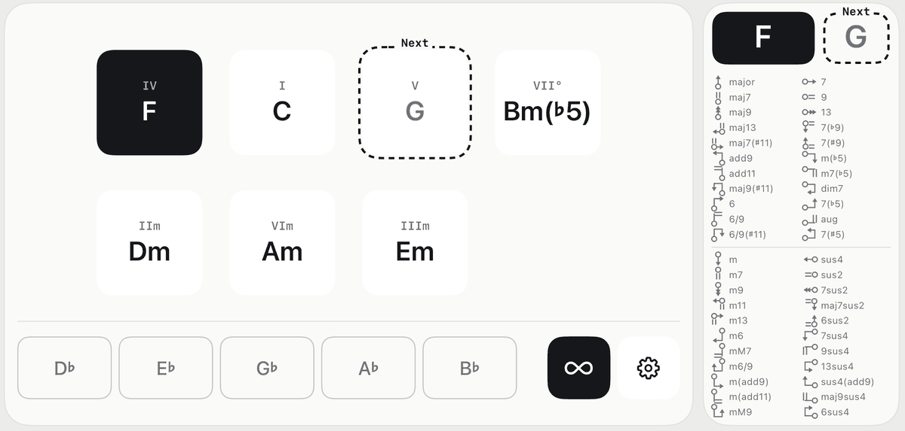
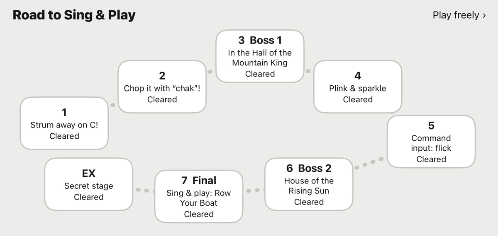

Sing and play your dream song.
flickchord is a chord instrument app for iPhone.

That song you always wanted to play on guitar? Play it on your iPhone. Hold a pad with your left hand and swipe the plate with your right, and you're playing along. Read the chord chart and play.
Follow the in-app guide, "Road to Sing & Play", to build your skills one move at a time. At the end, you sing while you play.

Bluetooth headphones and speakers delay the sound by 0.1–0.3 s, so playing in time is nearly impossible. Use the iPhone speaker or wired headphones.
Requirements
- iPhone with iOS 17 or later, held sideways
- English and Japanese
Support
See the FAQ. If that doesn't help, email ebm7dm7cm7bbf@icloud.com.
flickchord is a one-person project. Replies may take several days to a week, and we may not be able to reply to every message. Thank you for your patience.